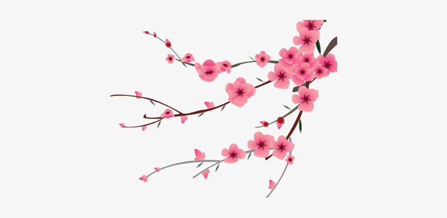

<div class="about-wrapper">
    <div class="head-section" id="sec1">
        <div class="head-text">
            <h3>“essentials to happiness in this life are something to do, something to love, and something to hope for.” ― Hector Garcia Puigcerve</h3>
        </div>
        

    </div>
    <div class="section">

        <div class="forimg">
            
        </div>
        <div class="fortxt">
            <div class="heading">
                What is Ikigai??
            </div>
            <h2>Ikigai (生き甲斐), is a Japanese concept that means
                <a> "a reason for being". </a>
            </h2>
            <br>
            <h4>
                It Speaks Of what you love, what the world needs, what you are good at and what you get paid for
            </h4>
            <br>
        </div>
    </div>
    <footer>
        This text is reserved for footer Developed by siddhart
    </footer>
</div>